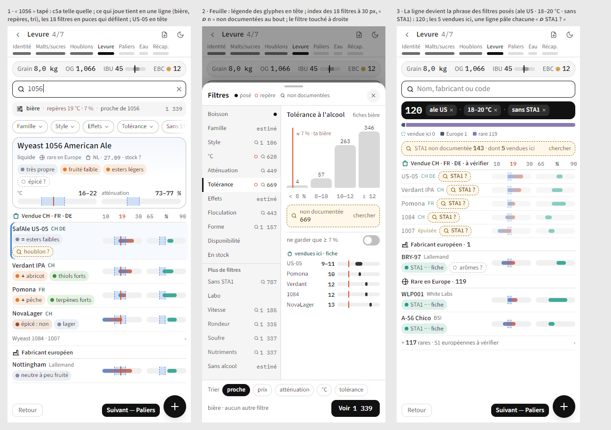
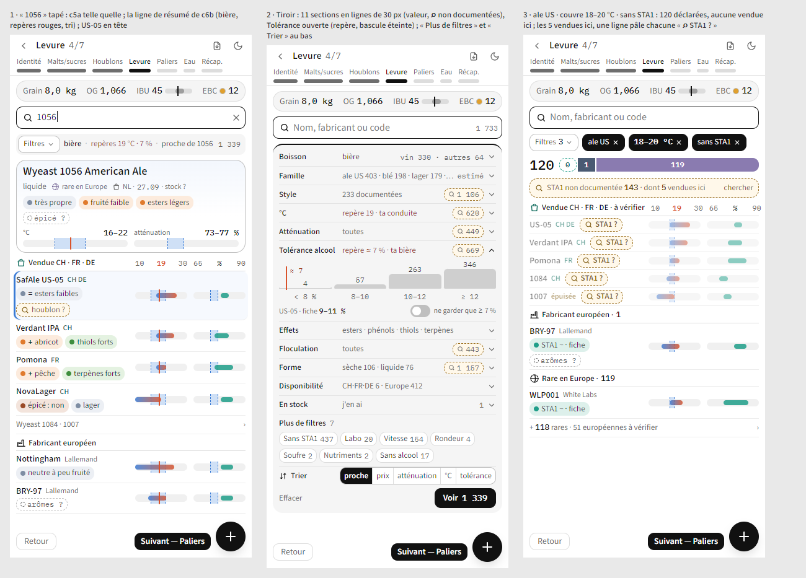
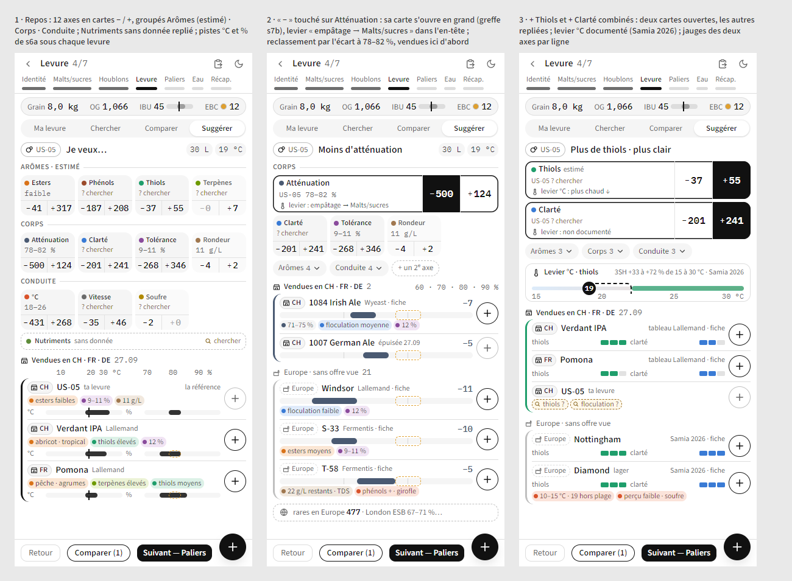
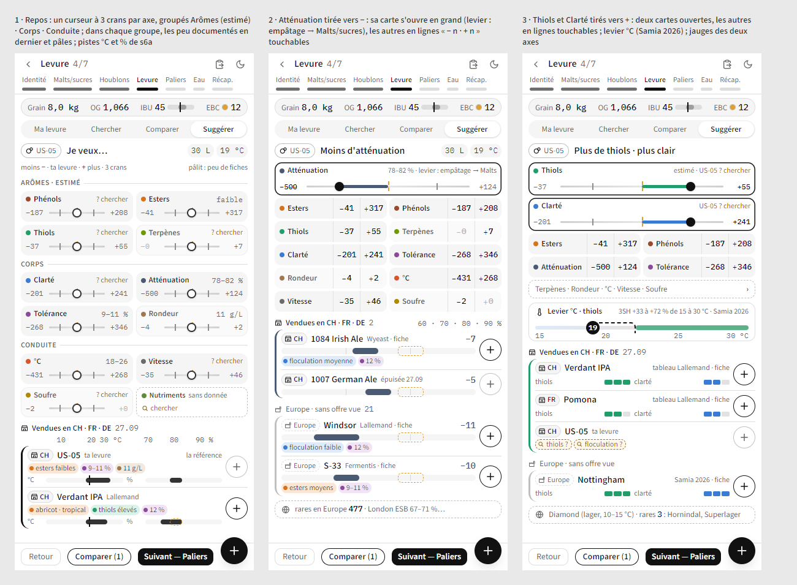

<title>Levure passe 4 · 09.11</title>
<meta name="claude:viewport-fit-sides" content="cover">
<style>
:root{--bg:#f6f4ef;--fg:#1f1d1a;--mut:#6b655c;--line:#ddd7cc;--acc:#a8541c;--card:#fffdf8}
@media (prefers-color-scheme:dark){:root:not([data-theme="light"]){--bg:#161512;--fg:#ece7de;--mut:#a39c90;--line:#34312b;--acc:#e08a4f;--card:#1f1d19;color-scheme:dark}}
:root[data-theme="dark"]{--bg:#161512;--fg:#ece7de;--mut:#a39c90;--line:#34312b;--acc:#e08a4f;--card:#1f1d19;color-scheme:dark}
body{background:var(--bg);color:var(--fg);font:15px/1.5 system-ui,-apple-system,"Segoe UI",sans-serif;padding-left:max(16px,env(safe-area-inset-left,0px));padding-right:max(16px,env(safe-area-inset-right,0px));padding-block:24px 48px}
main{max-width:1180px;margin:0 auto;display:flex;flex-direction:column;gap:36px}
h1{font-size:24px;margin:0;text-wrap:balance}h2{font-size:19px;margin:0 0 4px;text-wrap:balance}
p{margin:0;max-width:68ch}.mut{color:var(--mut);font-size:14px}
section{display:flex;flex-direction:column;gap:14px}
.v{background:var(--card);border:1px solid var(--line);border-radius:10px;padding:12px;display:flex;flex-direction:column;gap:8px;min-width:0}
.v.cand{border-color:var(--acc);border-width:2px}
.tag{display:inline-block;font-size:14px;letter-spacing:.04em;text-transform:uppercase;color:var(--acc);font-weight:600}
.v h3{font-size:16px;margin:0}
.sc{overflow-x:auto;border-radius:6px;background:#fff}
.sc img{display:block;max-width:none;height:560px;width:auto}
.v:not(.cand) .sc img{height:420px}
.ref{display:flex;gap:16px;flex-wrap:wrap;align-items:flex-start}
.ref img{width:340px;height:auto;max-width:100%;border-radius:8px;border:1px solid var(--line)}
ul{margin:0;padding-left:20px;max-width:68ch}
</style>
<main>
<header style="display:flex;flex-direction:column;gap:6px"><h1>Levure · passe 4</h1><p class="mut">09.11 · Chercher avec les 18 filtres de l'audit ; Suggérer générique, chaque caractéristique en − / +. « ⌕ n » : fiches sans la donnée, un toucher lance la recherche IA.</p></header>
<section id="a-choisir"><h2>À choisir</h2><p>Pour Chercher et pour Suggérer, ta maquette ou un mélange, et ce qui te gêne. Candidates du critique : <b>c6b</b> (Chercher) et <b>s7a</b> (Suggérer).</p></section>
<section><h2>1 · Chercher : c5a + les 18 filtres</h2><div class="v cand"><span class="tag">Candidate</span><h3>c6b · une ligne de résumé, des puces, une feuille à index</h3><p class="mut">« bière · repères 19 °C · 7 % · proche de 1056 · 1 339 » ; la feuille liste les 18 filtres à gauche, le filtre touché à droite avec ses comptes et ses « non documentées ».</p><div class="sc"></div></div><div class="v"><h3>c6a · le tiroir de c5a, en sections repliables</h3><p class="mut">Une ligne par filtre, valeur ou repère au milieu, « ⌕ n » à droite ; « Plus de filtres » en 7 puces comptées.</p><div class="sc"></div></div></section>
<section><h2>2 · Suggérer : s6a rendu générique</h2><div class="v cand"><span class="tag">Candidate</span><h3>s7a · cartes − / + groupées Arômes · Corps · Conduite</h3><p class="mut">Plus aucun but nommé : chaque caractéristique de la fiche a son − et son + depuis ta levure (esters − 41 · + 317, phénols − 187 · + 208…). Une carte sans donnée se replie.</p><div class="sc"></div></div><div class="v"><h3>s7b · un curseur − / + par caractéristique</h3><div class="sc"></div></div></section>
</main>
